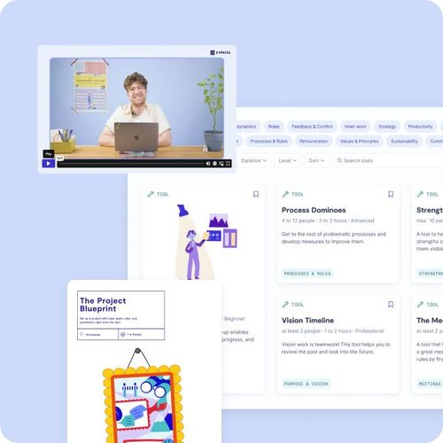

Business
5+ seats
Access for multiple team members within a tailored plan
The organisations of the future are self-organised. We launched 9 Spaces to support teams on their journey away from top-down planning and towards greater ownership.

On this page, you’ll learn how to effectively implement self-organisation within your team.
The organisations of the future are self-organised. Since Frédéric Laloux’s book Reinventing Organisations, many people have been clear that this is what the future of work looks like:
- Less hierarchy and more ownership: Self-organisation doesn’t mean there are no hierarchies anymore. Instead, hierarchies are shaped around competence.
- People who make decisions: We believe people generally want to take responsibility. Classic organisational structures are simply very good at stopping them from doing so. In self-organisation, the person who’s most competent in the relevant area makes the decision.
- Capable, empowered employees who grow into their skills and potential: Instead of linear career paths, self-organisation makes it possible to develop in different directions based on your strengths.
Self-organisation doesn’t mean less organisation. It means more. Teams that turn up the dial on self-organisation need to be skilled at building processes, creating and removing rules, and creating transparency. 9 Spaces is your organisational toolkit for developing towards more self-organisation, with our tools guiding you step by step:

On 9 Spaces you'll find interactive whiteboards, proven methods, facilitator guides and tutorials for smart processes, agile teams and successful transformation.
How far along are you on your journey towards a self-organised team? Below you’ll find statements that help you answer this question. Rate each one with a percentage from 0% to 100%.
✅ Our organisation has a clearly articulated purpose. Everyone in the organisation knows it.
✅ Everyone on the team knows their own strengths and the strengths of the other people in the organisation.
✅ Everyone on the team can bring their whole self to work.
✅ Everyone on the team has clear roles and responsibilities that are continuously developed further.
✅ Leadership roles don’t sit with one person. They’re meaningfully distributed across several people.
✅ Everyone on the team aligns their work with the current strategy.
✅ We continuously work on our interpersonal relationships as a team.
✅ Everyone in the organisation regularly receives both positive, encouraging feedback and constructive, critical feedback on their work.
✅ Everyone on the team has a working self-management system to organise their own work.
✅ Our meetings give us clarity and energy.
✅ We have a clearly defined set of values that everyone knows and that everyone lives by.
✅ People in the organisation feel responsible for what the organisation does.
You can find the full self-organisation check here:
Access for multiple team members within a tailored plan
All features and benefits at a glance?